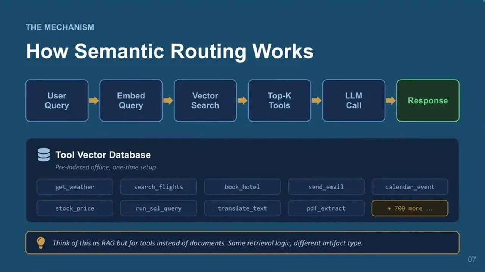
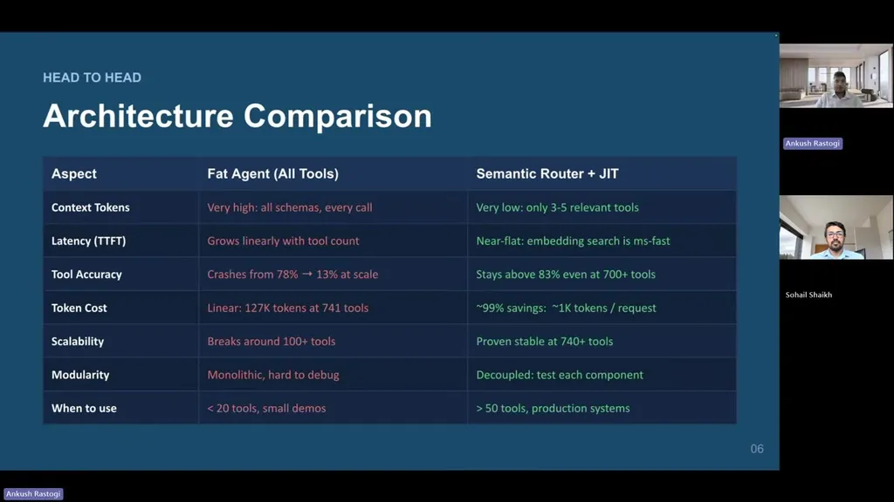

The 100-Tool Agent Is a Trap
If you only read one thing
- Fat-agent tool accuracy drops from about 78% at 10 tools to around 40% at 100 tools to 13.6% at 741 tools, while a semantic router stays above 83% across the same catalog sizes.
- At 741 tools, loading every tool description costs about 127,000 tokens per request before the user's question is even considered; just-in-time routing cuts that to roughly 1,000 tokens (about a 99% reduction) by injecting only 3-5 relevant schemas.
- Anthropic reported on-demand MCP tool loading cutting token usage from 150k to 2k tokens (98.7% reduction), cited as external confirmation of the same pattern.
Loading every tool's name, description, and JSON schema into every prompt regardless of relevance works fine at small scale (around 10 tools) but degrades as the catalog grows: the model starts calling the wrong function, confusing similar tools, and inventing tool names. The speakers attribute this partly to a 'lost in the middle' effect, where models attend more strongly to the beginning and end of long contexts than to hundreds of tool schemas packed in the middle.
“eventually the model starts calling the wrong function, and starts confusing similar tools, may invent tool names, and even take longer to respond”
▶ watch at 02:59“Model pays stronger attention to the beginning and end of the long context. When hundreds of tool schemas are packed into the middle, the model does not reliably use them”
▶ watch at 05:16
Fat-agent tool-call accuracy falls from about 78% at 10 tools to about 40% at 100 tools to 13.6% at 741 tools, while a semantic router holds above 83% across the same range. At 741 tools, describing every tool costs about 127,000 tokens per request; at 100,000 requests a day this becomes billions of tokens just for tool descriptions, and with 500 tools the fat-agent approach can push time-to-first-token past 5 seconds.
“at 741 tools, the accuracy will be a mere 13.6%. So, in short, it's roughly one correct tool out of eight tools”
▶ watch at 04:35“semantic router behaves very differently. It stays above 83% across the same catalog sizes”
▶ watch at 05:05“if we have 741 tools, we saw that it requires almost 127,000 tokens. That will include the tool description and the schema text”
▶ watch at 06:01
The proposed fix embeds each tool's description and stores it in a vector index offline; at runtime the user's query is embedded and matched against the index to retrieve the top-K (commonly 3-5) most relevant tools, and only those schemas are injected into the model call. The speakers describe this as directly analogous to RAG, reusable with existing embedding models and vector databases, and cite Anthropic's reported reduction from 150k to 2k tokens via on-demand MCP tool loading as external validation.
“the router will then return the top K tools. Often, K would be three or five tools that matches the user query”
▶ watch at 10:16“Their report token usage went from 150k tokens down to 2,000, which is 98.7% token reduction”
▶ watch at 12:22
The speakers caution that routing is unnecessary below roughly 20 tools and pays off once a system passes about 50 tools in production; below 10-15 tools, static loading is fine. Their recommended production steps are: catalog every tool with name/description/schema/owner/version, build a vector index of descriptions, write a router that embeds the query and returns top-K schemas, wire the agent loop to pull tools from the router rather than a hardcoded list, evaluate at K=3/5/10 to pick the smallest K meeting accuracy targets (K=5 as a starting default), and monitor selected tools and failures in production, re-embedding when descriptions change.
“If you have fewer than 20 tools, a router may be unnecessary. Just load the tools directly. But, once you passed 50 tools in the production system, then justifying router-based schema make more sense”
▶ watch at 08:48“In practice, K equals 5 is a strong default starting point. So, if you are want to try this, you can default it to five”
▶ watch at 13:58
Commentary (ours)
The 741-tool and 127k-token figures come from the speakers' own synthetic tool pools built for this benchmark rather than a shared public benchmark, so the exact accuracy curve is their measurement, though the qualitative direction matches Anthropic's independently reported MCP figures (ours).


Underlying detail — every claim, typed and timestamped (9)
| Stance | Claim | t |
|---|---|---|
| warns | As the tool catalog grows, the model starts calling the wrong function, confuses similar tools, invents tool names, and takes longer to respond. | 02:59 |
| asserts | Models attend more strongly to the beginning and end of long contexts, so hundreds of tool schemas packed in the middle are not reliably used. | 05:16 |
| asserts | Fat-agent accuracy drops from about 78% at 10 tools to around 40% at 100 tools and 13.6% at 741 tools. | 04:35 |
| asserts | The semantic router stays above 83% accuracy across the same catalog sizes where the fat agent's accuracy collapses. | 05:05 |
| asserts | 741 tools require about 127,000 tokens of tool descriptions per request, which at 100,000 requests a day becomes billions of tokens. | 06:01 |
| recommends | Semantic routing embeds tool descriptions offline into a vector index and retrieves the top-K relevant tools at query time to inject into the model call. | 10:16 |
| asserts | Anthropic reported on-demand MCP tool loading reduced token usage from 150k to 2,000 tokens, a 98.7% reduction. | 12:22 |
| recommends | Below roughly 20 tools a router may be unnecessary; routing pays off once a production system passes about 50 tools. | 08:48 |
| recommends | K equals 5 is recommended as a strong default starting point for the number of tools the semantic router retrieves. | 13:58 |
Machine-readable copy embedded in this page (script#ontology) and in the corpus ontology.